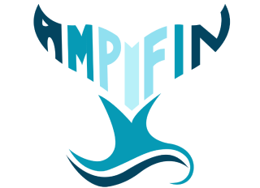

India is the 3rd LARGEST fish producer in the world
2nd LARGEST aquaculture nation

This has triggered the increase of bacterial and viral infections like Vibriosis


The consumption of fish affected with vibriosis causes various of diseases in humans as well.
Ampifin proposed a solution using an antimicrobial peptide encapsulated in Chitosan Nanoparticles preventing vibriosis adhesion to fish.
Learn More